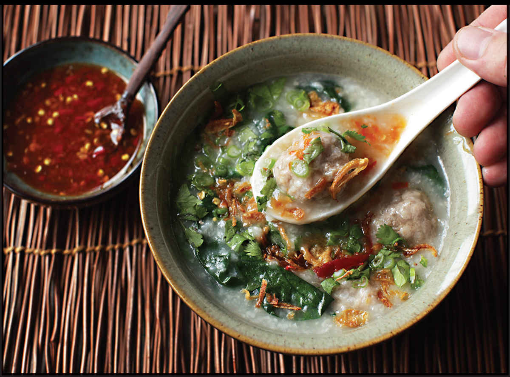

THAI-STYLE JOK WITH PORK MEATBALLS

Yield Serves 4 |
Active Time 30 minutes Total Time 1½ hours |
This is a classic Thai-style rice porridge with little pork meatballs flavored with fish sauce and white pepper that cook directly in the porridge. A raw egg stirred into each bowl of congee at the table adds richness and flavor—my friend Leela Punyaratabandhu suggests adding a layer of congee to each bowl, topping it with an egg, and ladling more congee on top to gently cook the egg with the residual heat of the porridge. It’s a wonderful method that gives you an egg surprise in the middle of each bowl as you stir. I also like adding some greens to the congee, like spinach, iceberg, or romaine lettuce, which become tender and sweet in the bowls. If you’ve got some sweet Thai preserved radish in your pantry, it makes a great addition to these bowls as well.
INGREDIENTS
1 lemongrass stalk
½ cup (about 3.5 ounces/100 g) grain or jasmine rice
Water or low-sodium chicken or vegetable stock (6 cups for short-grain, 5 cups for jasmine)
½ teaspoon freshly ground white pepper
Fish sauce
For the Meatballs:
8 ounces (225 g) ground pork
¼ teaspoon freshly ground white pepper
1 teaspoon (5 ml) fish sauce
½ teaspoon (2 g) kosher salt
1 tablespoon (15 ml) light soy sauce or shoyu
2 medium garlic cloves, minced (about 2 teaspoons/5 g)
1 tablespoon (12.5 g) sugar
To Serve (all additions are optional but recommended):
2 cups (about 3 ounces/90 g) greens such as kale (thick central stem discarded, leaves roughly chopped), spinach, chopped iceberg, or chopped romaine lettuce
4 eggs
Minced fresh cilantro
Thinly sliced scallions
Minced sweet Thai preserved radish
Fried Shallots (here)
Nam Pla Prik (here)
Prik Nam Som (here)
DIRECTIONS
1 Using the back spine of a knife, bash the lemongrass a dozen or so times to bruise it and help release flavor. Combine the rice, lemongrass, and water or stock in a wok or large saucepan. Bring to a simmer over high heat, stirring occasionally. Reduce to a bare simmer and cook, stirring occasionally, until the rice is completely tender and the water has thickened into a velvety porridge, about 1 hour total. Discard the lemongrass when the congee is done. Season with white pepper and fish sauce to taste. Keep the congee at a bare simmer on the stove, stirring occasionally and thinning it with water if it starts to get too thick.
2 For the Meatballs: Combine the pork, white pepper, fish sauce, salt, soy sauce, garlic, and sugar in a small bowl. Mix with your fingers until the mixture is homogenous and sticky, about 30 seconds. Wash your hands. Using wet hands, pinch off teaspoon-sized pieces of the pork mixture and form into small balls. Drop the balls directly into the simmering congee. Cover and continue to simmer until the meatballs are starting to firm up, about 1 minute.
3 To Serve: Stir in the greens and continue cooking until greens are wilted and the meatballs are cooked through, about 3 minutes longer.
4 Ladle some piping-hot congee into the bottom of each of 4 serving bowls, then crack a raw egg on top. Divide remaining congee among the bowls. Let them rest for a couple minutes before serving to allow the egg to cook slightly. Garnish each bowl with cilantro, scallions, preserved radish, and fried shallots. Serve, passing nam pla prik and prik nam som at the table to be added as desired.